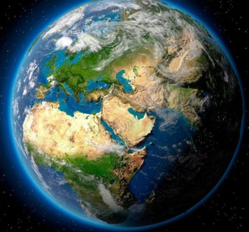
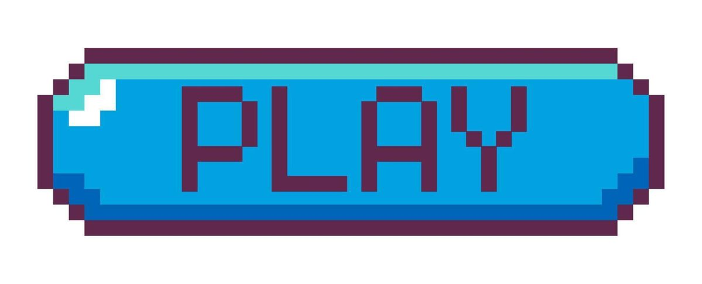

Aprende para un futuro sostenible
Educacion ambiental, accion y conocimiento para un planeta mas saludable
Bienvenido a Planeta verde. Aprende, actúa y transforma tu futuro. Con recursos prácticos y juegos interactivos, te empoderamos para cuidar el planeta.
Empieza tu camino verde 🌱Para empezar solo necesitas decidir dar el primer paso. Hoy no es un día cualquiera: es el día en que eliges cuidar, aunque sea poco. Ese poco, con el tiempo, se convierte en todo. Tal vez hoy solo recicles una botella. Mañana, quizás, invites a tu vecino a plantar un árbol. La semana que viene, tal vez organices una jornada de limpieza en tu barrio. Cada acción, por pequeña que parezca, es una semilla. Y las semillas, cuando se riegan con constancia, crecen en bosques enteros. Este no es un sitio para quienes ya lo saben todo. Es para quienes están listos para aprender, equivocarse, volver a intentarlo y, sobre todo, para cambiar. Tu aprendizaje no es solo tuyo: es un regalo para las generaciones que vendrán.
 Gana niveles, no contaminación 🕹¿Qué pasa si aprender a cuidar el planeta pudiera ser tan divertido como un juego? Aquí no se mide tu nivel por cuántos puntos ganas o cuántos errores cometes… se gana conciencia. Cada nivel superado es un árbol más plantado en tu mente, un río más limpio en tu imaginación, un futuro más claro en tus decisiones. En este juego, no hay vidas perdidas: solo oportunidades ganadas. Resuelve acertijos ecológicos, identifica especies en peligro, elige rutas sostenibles, reduce tu huella digital… y verás cómo cada elección correcta no solo te lleva al siguiente nivel, sino que también contribuye a una red global de acciones reales. Porque aquí, cada clic cuenta. Cada decisión, un impacto. Juega. No por entretenimiento… por renovación. Porque el planeta no necesita más espectadores. Necesita jugadores comprometidos.
 Conviértete en agente de cambio 📚El cambio no nace de los discursos. Nace de las personas que deciden saber más, entender mejor y actuar con propósito. Este no es un curso tradicional con exámenes ni calificaciones. Es un despertar. Un viaje personal donde lo que aprendes no se olvida… se vive. Aquí, no te enseñamos qué hacer: te acompañamos a descubrir por qué lo debes hacer. Desde cómo reducir el plástico en tu hogar hasta cómo convencer a tu escuela de adoptar compostaje, cada recurso está pensado para que lo apliques, no solo para que lo leas. Lo que aprendas aquí no se queda en la pantalla. Se transforma en hábitos, en conversaciones, en acciones visibles. Y cuando lo vives, cambias cosas: tu entorno, tu comunidad, tu futuro. Empieza por aquí. Porque el agente de cambio que el mundo necesita… ya está dentro de ti.
 Sé parte del cambio real 🌍
Sé parte del cambio real 🌍
Las noticias no son solo palabras en una pantalla. Son historias de comunidades que se levantan, de niños que limpian ríos con sus propias manos, de agricultores que devuelven la vida a la tierra con técnicas ancestrales y nuevas tecnologías. Son madres que enseñan a sus hijos a cultivar hierbas en balcones, de jóvenes que reivindican el derecho a un planeta vivo. Lo que lees aquí no es solo información… es una llamada. Una llamada que no pide tu firma, sino tu presencia. ¿Vas a leerla y seguir tu camino? O ¿vas a unirte a ella? A convertirte en parte de esa historia. Porque el cambio real no se mide en likes ni compartidos. Se mide en manos que se levantan, en voces que se suman, en decisiones que se repiten día tras día. Aquí no solo informamos. Conectamos. Inspira. Y te invita a ser el próximo capítulo de esta historia. ¿Estás listo para escribirlo?
"Un clic a la vez" vincula la navegación con el impacto real.